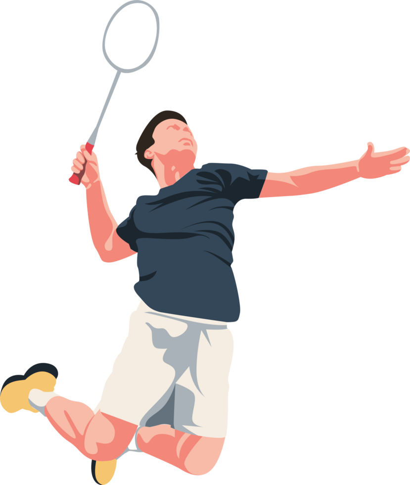

Who am I
My Name is Yashmit Bhatmuley, and I am 16 years old. I was born in San Diego and have lived here my whole life. When I was 2, I moved from North Park to Carmel Valley. For elementary school, I attended Ashley Falls; for middle school, Pacific Trails; and for high school, I am currently at Canyon Crest Academy. I enjoy staying busy with Mock Trial, Robotics (First Tech Challenge), and competitive badminton.
My Current Interests

I love trying new things and frequently switch between hobbies. Currently, I am deeply involved in singing and playing the guitar, often blending the two together. While I initially disliked badminton when my mom signed me up for classes, I grew to love it once I started playing with friends. It has become a fantastic way to stay active and socialize.
People that Inspire Me
My parents are my biggest inspirations. My dad taught me that it is never too late to change paths. He transitioned from engineering (at qualcomm) to law at age 43 and found his true passion. My mom inspired me by turning her love for singing into a career. She proved that you can successfully monetize what you love. My father inspired and pushed me to enroll in Mock Trial where I found a passion of mine and future career choice.